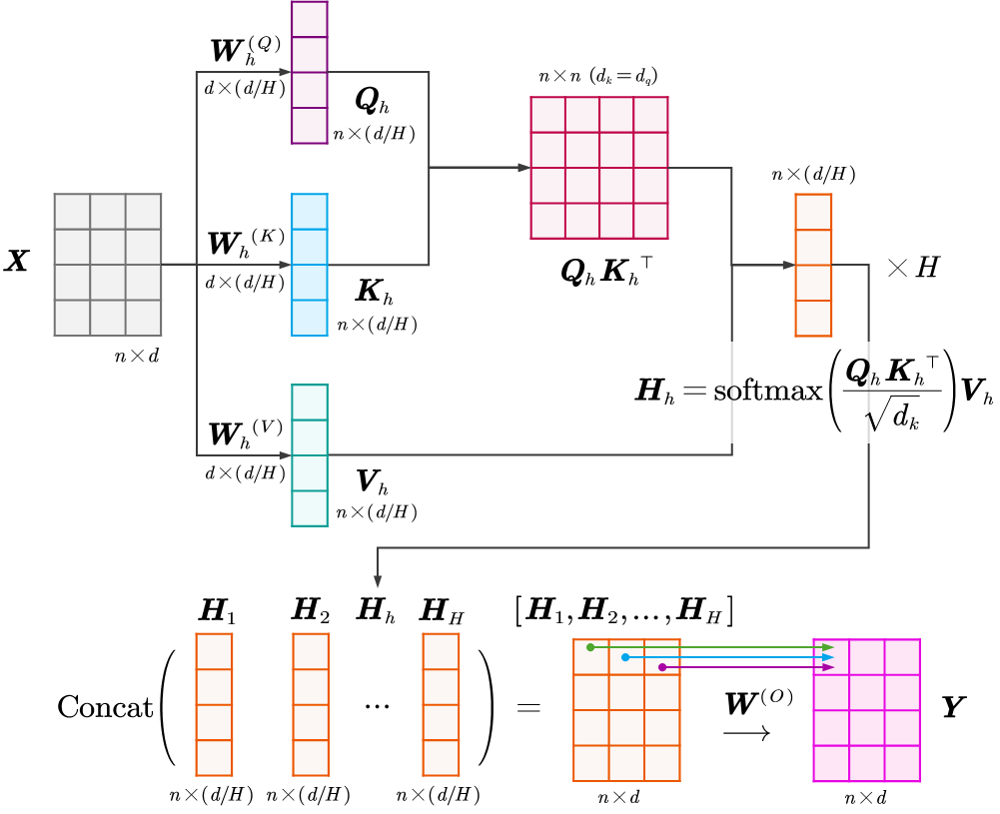
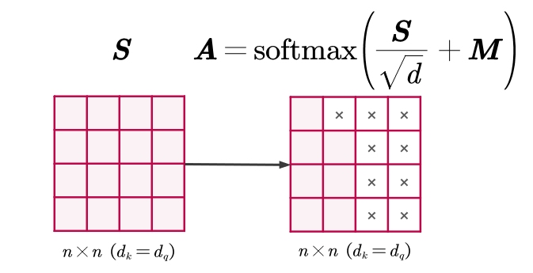
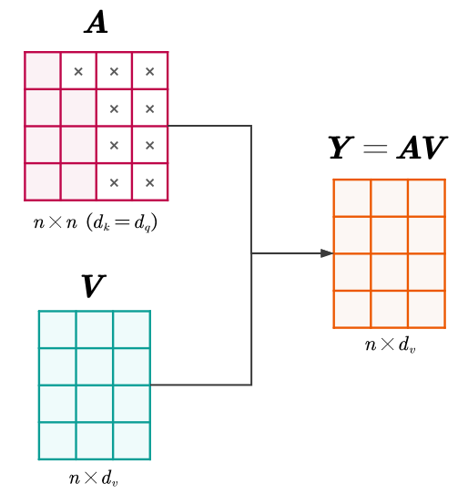

多头注意力机制
我们之前定义的（单头）自注意力机制Attention(Q,K,V)，其核心是学习一套投影矩阵W(Q),W(K),W(V)。 Q=XW(Q),K=XW(K),V=XW(V) Y=Attention(Q,K,V)=softmax(dkQK⊤)V 多头注意力
问题：一个句子（或一个序列）中可能存在多种不同模式（pattern）的依赖关系。
- 例如，某些注意力模式可能需要关注句法结构（如动词与主语的关系）。
- 另一些模式可能需要关注时态（如"was"与"doing"的关系）。
- 还有一些模式可能需要关注语义（如"bank"与"river"的关系）。
如果我们只使用一套W矩阵（即一个"头"），模型在训练时可能会被迫学习一种“平均化” (averaged)的注意力模式，试图将所有这些不同的关系“折衷”在一起。这会限制模型捕捉特定和细微依赖关系的能力。 解决：我们不只让模型学习一套注意力模式，而是让它并行地学习多套（H套）注意力模式。这就是多头注意力（Multi-head Attention）。 其核心思想是：让H个不同的“头”分别去关注序列中不同的信息子空间，每个头都独立学习自己的一套W(Q),W(K),W(V)参数。 1️⃣独立投影（分头）
假设我们设定头的数量为H（例如H=3）。对于每一个头h（h=1,…,H），我们都创建一套独立且不共享的可学习权重矩阵： - Wh(Q)∈Rd×dq
- Wh(K)∈Rd×dk
- Wh(V)∈Rd×dv
为了保持计算总量不变，我们通常将子空间的维度设为dq=dk=dv=d/H。因此，一共有H套（h=1,…,H）可学习权重矩阵： - Wh(Q)∈Rd×(d/H)
- Wh(K)∈Rd×(d/H)
- Wh(V)∈Rd×(d/H)
然后，将原始输入X（维度n×d）并行投影H次，为每一个头生成一组Qh,Kh,Vh∈Rd×(d/H)： Qh=XWh(Q),Kh=XWh(K),Vh=XWh(V) head1head2⋮headH:Q1=XW1(Q),K1=XW1(K),V1=XW1(V):Q2=XW2(Q),K2=XW2(K),V2=XW2(V):QH=XWH(Q),KH=XWH(K),VH=XWH(V) 2️⃣并行计算注意力
现在我们有了H组Qh,Kh,Vh。我们让这H个头独立且并行地执行我们之前学过的“缩放自注意力”计算。对于第h个头，其输出矩阵Hh为： Hh=Attention(Qh,Kh,Vh)=softmax(dkQhKh⊤)Vh - Head 1可能发现
chasing和is的相关性最高（学习时态结构），因此head1的输出主要聚合了与时态相关的信息。 - Head 2可能发现
chasing和criminal的相关性最高（学习语义指代），因此head2的输出主要聚合了实体语义信息。
最终，我们得到了H个不同的输出矩阵Hh，维度与Qh,Kh,Vh一样为n×(d/H)。Hh的含义是第h个头（分组）在特定的信息空间中学到的每一个Token的新表示。 3️⃣拼接与融合（汇总）
上一步，我们得到了H个不同的输出矩阵H1,H2,…,HH，各自捕获了不同的信息。现在我们需要将它们汇总起来。 最直接的方法是将这H个输出矩阵在特征维度（列方向）上进行拼接： Concat(H1,…,HH)=[H1,H2,…,HH] 我们需要将这些来自不同头的信息合并起来，回归到一个统一的输出矩阵，其维度为n×[H⋅(d/H)]=n×d，与原始输入X（维度n×d）一致。 简单的拼接只是把不同子空间的信息摆在了一起，并没有进行融合。例如，Head 1 提取的“时态”信息和 Head 2 提取的“语义”信息目前是割裂的。
因此，最后一步是引入第四个可训练的权重矩阵W(O)∈Rd×d，对拼接后的结果做一次全连接层映射： Y=[H1,H2,…,HH]⋅W(O) 以下图为例，拼接后的左侧橙色矩阵，每一行代表一个Token在所有头中的集合信息。以第1个行向量为例，其包含了第1个Token在所有H个头中的特征。例如： - 前一部分来自 Head 1（比如关注语法）。
- 中间部分来自 Head 2（比如关注指代）。
- 后一部分来自 Head 3（比如关注韵律）。
W(O)的每一列，都是一组特定的“配方”或权重。我们将第1个行向量与W(O)的第1列进行点积，得到的值，就是输出矩阵Y的第1行的第1个元素（如下图的权重线所示）。同样地，与W(O)的第2列进行点积，得到的就是Y的第1行的第2个元素。以此类推，就能得到整个输出矩阵Y。 这个Y（维度n×d）就是多头注意力层的最终输出，其包含了所有头的信息。这一步相当于一位“总指挥”，它查看所有H个“专家”（头）的分析报告，并将这些分散的信息整合、混合，最终生成该层输出的统一表示。 通过这种机制，Attention 就像拥有了“复眼”，能够同时从多个维度（语法、语义、指代、韵律等）去观察和理解输入序列，极大地增强了模型的表达能力。
Qh=XWh(Q),Kh=XWh(K),Vh=XWh(V) Hh=Attention(Qh,Kh,Vh)=softmax(dkQhKh⊤)Vh Y=Concat(H1,…,HH)W(O) 
维度的典型选择
在实际的Transformer模型中，为了保持计算效率和参数量的平衡，有一个非常标准的设计选择：
我们希望将总的维度d平均分配给H个头。因此，我们通常设置： dq=dk=dv=Hd - d (Model Dimension)：是输入Token的完整嵌入维度（也就是X的列数）。这通常是一个比较大的数字。
- H (Heads)：是注意力头的数量。
- dq (Head Dimension)：是每个独立注意力头内部处理的维度。
因此，只要H>1（多头），d就会大于dq。 - 输入X：n×d
- 每个头的Wh(Q),Wh(K),Wh(V)：维度分别为d×(d/H)。
- 每个头的Qh,Kh,Vh：维度为n×(d/H)。
- 每个头的输出Hh：维度为n×(d/H)。
- 拼接后的矩阵Concat(…)：维度为n×(H⋅(d/H))，即n×d。
- 混合矩阵W(O)：维度为d×d。
- 最终输出Y：维度为(n×d)×(d×d)=n×d。
这个设计非常巧妙：它保持了输入和输出的维度一致（都是n×d），这使得我们可以轻松地将多层Multi-head Attention堆叠起来。同时，它将计算量分散到H个并行的、更小维度的计算中，提高了模型的表示能力。 | | | | |
|---|
| | | | |
| | | | |
| | | | 12288≫128 |
| | | | 4096≫128 |
可以看到，d通常是dq的8到96倍，也就是说d(原始特征空间)≫dq (单个头的查询子空间)。 为什么dq比较小？这里有两个主要原因： - 计算效率与参数量控制：计算注意力得分 (QK⊤) 的复杂度与向量维度的平方相关。如果每个头都保持dq=d这么大的维度，当我们有多个头时，计算量和参数量会爆炸式增长。通过将d拆分，即使我们有H个头，整体的计算量（在投影部分）大体上和单头注意力（如果单头维度是d）是相当的。
- 专注特定的“侧面”：d包含了这个Token的所有语义信息（词性、句法、多种含义、情感等）。而每个注意力头只需要负责捕捉某一种特定的关系（比如“寻找主语”或“寻找修饰语”）。为了完成这个特定的“查询”任务，它不需要携带所有的原始信息，只需要投影到能够代表该特征的低维子空间 (dq) 即可。
带掩码的注意力机制
这里，我们介绍自注意力机制中一个重要的组件——注意力掩码 (Attention Masks)。
在标准的自注意力机制中，默认假设是序列中的每一个Token都可以“看见”并关注序列中的其他所有Token。但在实际应用中，这种全连接的关注并不总是合法的，甚至可能是有害的。
屏蔽的动机
主要有两个场景迫切需要我们对注意力矩阵进行“修剪”：
A. 处理变长序列
在深度学习训练中，为了并行计算提高效率，我们通常将多个样本打包成一个Batch。
然而，自然语言中的句子长度是不一的。为了将不同长度的句子放入同一个矩阵（Tensor）中，我们必须将短句子填充 (Padding) 到和长句子一样的长度。通常使用无意义的占位符（如<P>或0）。
例如，I swam across the river .和It is raining .。
Batch=⎣⎡[I,swim,across,the,river,.][It,is,raining,.,<P>,<P>]⋮⎦⎤ 对于其中一个序列，[It,is,raining,.,<P>,<P>]。假设我们正在计算Token raining (该序列中的第i=3个Token) 的新表示。计算过程如下： yraining=α3,1vIt+α3,2vis+α3,3vraining+α3,4v.+α3,5v<P>+α3,6v<P> 由于αi,j是Softmax的输出，且Softmax函数永远大于0，因此，α3,5和α3,6的值也会大于0。 α3,5, α3,6=Softmax(qswim⋅k<P>)=eqswim⋅kIt+⋯+eqswim⋅k<P>eqswim⋅k<P>>0 后果：这意味着，毫无意义的占位符<P> 也参与了加权平均。新向量yswim里混入了无用信息 (v<P>)，这会直接破坏单词的语义表示。 因此，我们需要在 Softmax 之前，屏蔽掉所有涉及<P> 位置的注意力连接。例如，强行把qswim⋅k<P>的得分变成−∞： α3,5, α3,6=Softmax(qswim⋅k<P>)=eqswim⋅kIt+⋯+e−∞e−∞≈0 这样e−∞=0，从而保证α3,5和α3,6的值保持为0，彻底切断噪声。 yraining=α3,1vIt+α3,2vis+α3,3vraining+α3,4v.+0 v<P>+0 v<P> 这个方法就是“填充掩码 (Padding Mask)”的思想。
B. 防止未来信息泄露
在 GPT 等生成模型训练中，我们使用Teacher Forcing，即把完整答案["A", "B", "C", "D"]一次性喂给模型，但要求模型模拟“逐字生成”。
例如，我们把The FBI is chasing a criminal on the run.一次性喂给模型，但模型在生成过程中（生成到红字的时候），不能看到后面的文字（需要预测的真实标签）。
这个过程可以表示为：假设模型正在学习预测序列中的第3个词is。
- 输入：
["The", "FBI", "is", "chasing"] - 当前位置：i=2 (对应词
FBI)。 - 目标：利用
The 和FBI的信息，预测下一个词is。
如果没有掩码，自注意力机制会计算i=2与所有位置的相似度，包括需要预测的真实标签j=3(is) 和j=4 (chasing)： Score2,3=qFBI⋅kis ;Score2,4=qFBI⋅kchasing 后果：因为kis和vis已经包含了答案is的完整信息。模型会发现：与其辛苦学习语法规则来预测is，不如直接把注意力权重 100% 给到位置3，直接把vis拿过来用（抄答案）。 此时，模型退化成了一个单纯的复读机，损失函数极低，但在测试时（没有未来信息可看）会彻底失效。
一种解决办法是，对于相似度矩阵QK⊤中的任意元素(i,j)： Score=QK⊤=⎣⎡q1⊤k1⋮qn⊤k1q1⊤k2⋮qn⊤k2…⋱…q1⊤kn⋮qn⊤kn⎦⎤ 如果j>i（列索引 > 行索引，即在当前位置之后的Token），则必须屏蔽。 Scorei,j=−∞,if j>i ⎣⎡q1⊤k1⋮qn⊤k1−∞⋮qn⊤k2…⋱…−∞⋮−∞⎦⎤ 这样经过Softmax函数归一化处理后，得到的αi,j中： αi,j=0,if j>i 这确保了“在当前位置之后的第j个Token”不会参与到“当前第i个Token”的新表示的计算中。 yFBI=α2,1vThe+α2,2vFBI+α2,3vis+α2,4vchasing+…=α2,1vThe+α2,2vFBI+0⋅vis+0⋅vchasing+… 这个方法就是“因果掩码 (Causal Mask)”的思想。
注意力掩码
为了在数学上实现这种“屏蔽”，我们引入一个掩码矩阵M，并重写注意力公式。 Attention(Q,K,V;M)=softmax(dkQK⊤+M)V 这个公式的关键在于：在进行 Softmax 归一化之前，我们将掩码矩阵M直接加到了缩放后的相似度得分矩阵上。 M∈Rn×n编码了硬性的可见性约束 (Hard Visibility Constraints)。它不是模型学习出来的参数，而是根据序列结构（Padding 位置或因果顺序）预先人工构造好的。 Mij={0,−∞,allowed (允许关注)blocked (禁止关注) - 0：表示第i个Token可以关注第j个Token。因为x+0=x，原本的相似度得分保持不变。
- −∞：表示第i个Token 绝对不能关注第j个Token。
为什么是−∞？使用负无穷大（在代码实现中通常使用一个极小的负数，如−109）是为了利用Softmax函数的性质来实现“彻底屏蔽”。 相似度得分会经过Softmax公式进行归一化，假设原本的得分为Scoreij（下面用Sij表示）： aij=Softmax(Sij+Mij)=∑kexp(Sik+Mik)exp(Sij+Mij) 当Mij=−∞时： aij=∑kexp(Sik+Mik)exp(Sij+(−∞))=∑kexp(Sik+Mik)exp(−∞)≈0 - 分子为0：该位置的注意力权重aij会变成0。这意味着Value向量vj不会被加权聚合到输出中。
- 分母不受影响：该项在分母求和中也为0，不会影响其他合法位置的概率分布。
- 梯度阻断：由于权重为0，反向传播时该路径的梯度也为0，彻底切断了信息流。
总之，注意力掩码不仅仅是一个技术细节，它是Transformer能够正确处理批次数据（通过Padding Mask）和执行生成任务（通过Causal Mask）的前提条件。它通过在Softmax之前的简单加法操作，实现了对信息流动的精确控制。
Transformer有两种最核心的掩码机制：Padding Mask（填充掩码）和Causal Mask（因果掩码）。
我们可以把它们分别理解为“噪声过滤器”和“时间屏障”。
填充掩码 (Padding Mask)
回顾一下，当我们将变长的句子打包成一个Batch进行并行训练时，必须把短句子用无意义的PAD符号<P>补齐到最长句子的长度。这些PAD符号就像是混入真实信号中的“噪声”，如果不加处理，模型会尝试去理解和聚合这些无意义的符号。
1.定义指示向量p：首先，定义一个布尔向量（或0/1向量）p∈{0,1}n，用来标记序列中哪些位置是填充物<P>。 pj={1,0,if j is <P>other 例如，我们的Batch中有一条长度为4的序列：[I, swim, <P>, <P>]。即n=4，其中前两个是真实词，后两个是填充词。 p=⎣⎡0011⎦⎤←I←swim←<P>←<P> 2.构造掩码矩阵Mpad：我们需要构造一个n×n的矩阵。关键点在于：只要第j列（Key的位置）是PAD，那么无论第i行（Query的位置）是谁，都不应该关注它。 Mpad=1p⊤⋅(−∞) - p⊤是一个行向量。
- 1是全1的列向量。
- 它们的乘积1p⊤会通过广播机制（Broadcasting），把p复制到每一行。
- 结果：如果第j个Token是PAD，那么Mpad的整个第j列都会变成−∞；如果不是，则为0。
Mijpad={−∞,0,pj=1pj=0 例如，[I, swim, <P>, <P>]，构造出的掩码矩阵为：
Mpad=1p⊤⋅(−∞)=⎣⎡1111⎦⎤[0011]⋅(−∞)=⎣⎡00000000−∞−∞−∞−∞−∞−∞−∞−∞⎦⎤ Y=softmax(dkQK⊤+Mpad)V 例如，对于[I, swim, <P>, <P>]，假设QK⊤/dk计算出的相似度得分如下： Scaled Score=⎣⎡107……89……51……24……⎦⎤ 现在加上掩码矩阵Mpad： ⎣⎡107……89……51……24……⎦⎤+⎣⎡00……00……−∞−∞……−∞−∞……⎦⎤=⎣⎡107……89……−∞−∞……−∞−∞……⎦⎤ Softmax(…)≈⎣⎡0.880.12……0.120.88……00……00……⎦⎤ 通过这种矩阵操作，第3和第4个位置的权重被强制归零。模型在聚合信息时，就像这两个 PAD 根本不存在一样，彻底消除了噪声的影响。
也就是说，这确保了任何Query在计算注意力时，对于那些作为Padding的Key，其注意力权重都被强行置为0。
因果掩码 (Causal Mask)
回顾一下，在像GPT这样的自回归生成模型中，生成过程是严格遵循时间顺序的。当模型试图预测第i个词时，它绝对不能“偷看”到i之后的词（未来的答案）。必须严格保证因果性 (Causality)。 1.定义下三角矩阵Mcausal：我们需要构建一个“时间屏障”。对于矩阵中的元素Mij（表示第i个词关注第j个词）： - 如果j≤i（过去和现在）：允许关注，值为0。
- 如果j>i（未来）：严禁关注，值为−∞。
Mijcausal={0,−∞,j≤ij>i 这就形成了一个经典的下三角 (Lower-Triangular) 矩阵结构：
Mcausal=⎣⎡00⋮0−∞0⋮0−∞−∞⋮0……⋱0−∞−∞⋮0⎦⎤ 假设我们的输入序列是[I, swim, every, day]（n=4）。 Mcausal=⎣⎡0000−∞000−∞−∞00−∞−∞−∞0⎦⎤ - 第1行 (Token A)：对应矩阵行
[0, -inf, -inf, -inf]。 这意味着I只能关注I自己。它看不见swim, every, day。 - 第2行 (Token B)：对应矩阵行
[0, 0, -inf, -inf]。 这意味着swim可以关注I和swim。但它看不见 every, day。 - 第3行 (Token C)：对应矩阵行
[0, 0, 0, -inf]。 这意味着every可以关注I, swim, every。但它看不见day。
Y=softmax(dkQK⊤+Mcausal)V 假设相似度得分Score如下： dkQK⊤=⎣⎡10654910658910678910⎦⎤ 加上因果掩码Mcausal： ⎣⎡10654910658910678910⎦⎤+⎣⎡0000−∞000−∞−∞00−∞−∞−∞0⎦⎤=⎣⎡10654−∞1065−∞−∞106−∞−∞−∞10⎦⎤ Softmax(…)≈⎣⎡1.000.380.240.1600.630.290.20000.480.240000.40⎦⎤ 经过 Softmax 后，所有右上角的概率全部变为0。模型在加权聚合信息时，它只能基于当前Token和之前的Token来构造当前Token的新表示，也就是说只能用历史信息来预测未来。
3.联合应用：在实际的解码器（Decoder）训练中，我们通常同时需要这两种掩码。既不能看未来的词，也不能看Padding的词。
Y=softmax(dkQK⊤+Mpad+Mcausal)V 这利用了−∞的“吞噬”特性，只要某一元素的位置有−∞出现（任意一个掩码说“不许看”），那么该位置的最终得分就是−∞。其对应的Softmax的输出值即为0。这确保了所有非法的注意力连接都被彻底阻断。 例如，假设序列是[A, B, <P>, <P>]，那么Mpad+Mcausal： ⎣⎡00000000−∞−∞−∞−∞−∞−∞−∞−∞⎦⎤+⎣⎡0000−∞000−∞−∞00−∞−∞−∞0⎦⎤=⎣⎡0000−∞000−∞−∞−∞−∞−∞−∞−∞−∞⎦⎤ 那么dkQK⊤+Mpad+Mcausal： ⎣⎡10654910658910678910⎦⎤+⎣⎡0000−∞000−∞−∞−∞−∞−∞−∞−∞−∞⎦⎤=⎣⎡10654−∞1065−∞−∞−∞−∞−∞−∞−∞−∞⎦⎤ Softmax(…)≈⎣⎡1.000.380.450.4400.630.550.5600000000⎦⎤ 自注意力的计算复杂度
在深入研究 Transformer 架构及其变体时，理解其资源消耗的本质是至关重要的。许多现代大模型（LLM）的研究方向——如 FlashAttention、线性注意力（Linear Attention）、KV Cache 优化等——其核心动机均源于对标准注意力机制计算复杂度的优化。
在循环神经网络（RNN）时代，处理序列的时间复杂度通常是线性的，即O(n)。这意味着每增加一个 Token，计算时间只增加固定的量。然而，RNN 无法并行训练，且存在长距离遗忘问题。 Transformer 通过自注意力机制引入了“全局视野”，让每个 Token 都能直接“看见”序列中的其他所有 Token。这种能力的代价是巨大的：模型必须计算每对 Token 之间的关系。
核心问题：随着序列长度n的增长，Transformer 的计算量和显存占用是如何变化的？这种变化趋势为何限制了处理超长文本（如整本书或长篇代码）的能力？ 单头注意力的复杂性分析
- n(Sequence Length)：序列的长度（例如，输入的单词数量）。在长文本处理中，这个值可能从512增长到32k甚至1M。
- d(Hidden Dimension)：每一个Token向量的嵌入维度。通常是一个固定的常数（如512, 768, 4096）。
d=dq=dk=dv Attention(Q,K,V)=softmax(dQK⊤)V 阶段一：计算相似度矩阵
首先，我们需要计算查询矩阵Q和键矩阵K的乘积 (Score Matrix)。 Sn×n=Qn×dKd×n⊤ 这是一个标准的矩阵乘法。结果矩阵S的大小为n×n。为了得到S中的每一个元素（标量），我们需要计算两个d维向量的点积（包含d次乘法和d−1次加法）。S中共有n2个元素。 Time: O(n2⋅(d+d−1))≈O(n2⋅d) 阶段二：掩码与Softmax
接下来，我们对得分矩阵S进行缩放、掩码处理和Softmax归一化，得到注意力权重矩阵A。 A=softmax(dS+M) 此时我们处理的是一个n×n的方阵S。 
空间复杂度（内存瓶颈）：这是一个关键点。我们需要在显存中直接存储这个n×n的矩阵。 - 当n=1,000时，n2=106（一百万）。
- 当n=32,000时，n2≈109（十亿）。
这种二次方增长的空间需求往往是导致GPU显存不足（OOM）的直接原因。
Space: O(n2) 时间复杂度：Softmax、加法掩码、缩放都是逐元素 (Element-wise)操作。我们需要遍历矩阵中的所有n2个元素。与d无关。 Time: O(n2) 阶段三：加权聚合
最后，利用权重矩阵A对值矩阵V进行加权求和 (Weighted Sum)。 Yn×d=An×nVn×d 计算逻辑：这也是一个矩阵乘法。结果矩阵Y的大小为n×d。为了得到输出中的每一个元素，我们需要将A的一行（n维）与V的一列（n维）进行点积运算（包含n次乘法和n−1次加法）。总共有n×d个输出元素。 O((n+n−1)×(n×d))≈O(n2⋅d) 
总结：二次方瓶颈
将上述步骤汇总，我们可以得到自注意力机制的总复杂性分析。
1.总时间复杂度 (Total Time Complexity)
Total Time≈QK⊤O(n2d)+SoftmaxO(n2)+AVO(n2d)≈O(n2d) 2.总空间复杂度 (Total Space Complexity)
我们需要存储用于反向传播的激活值（Activations）。其中最主要的部分是n×n的注意力矩阵A以及大小为n×d的输入/输出矩阵。 Total Space≈Attention MatrixO(n2)+Input/OutputO(n×d)≈O(n2) 由于d通常远小于n（在大规模序列任务中），我们可以简略地说Transformer的时间和空间复杂度都是关于序列长度n的二次方。 - 与序列长度n的关系：复杂度是n的二次方。这是限制Transformer处理长文档（Long Context）的主要原因。
- 序列长度增加2倍→计算量和内存增加4倍。
- 序列长度增加10倍→计算量和内存增加100倍。
- 与模型维度d的关系：复杂度是d的线性函数。这意味着增加模型宽度比增加上下文长度要便宜得多。
- RNN：时间复杂度为O(n⋅d2)。它是n的线性函数，但d的二次方。这意味着RNN擅长处理长序列（n大），但难以扩展模型宽度（d大）。
- Transformer：时间复杂度为O(n2⋅d)。它是d的线性函数，但n的二次方。这意味着Transformer非常容易通过增加层宽（d）来提升能力，但在处理长序列时面临巨大的算力墙。
因此，由于注意力矩阵A(n×n) 的存在。只要我们显式地计算并存储这个矩阵，就无法摆脱O(n2)的束缚。 既然O(n2)是由n×n矩阵引起的，现代研究致力于在不显式计算这个大矩阵的情况下获得相同的结果，或者通过近似计算来绕过它： - FlashAttention (IO Aware)：它并没有改变O(n2)的数学运算量，但通过分块计算 (Tiling) 和算子融合，避免了将庞大的n×n矩阵写入显存（HBM）。它利用GPU极快的片上内存（SRAM）进行计算，极大地减少了内存访问开销，使得处理更长序列成为可能。
- Linear Attention (线性注意力)：通过核方法（Kernel Method）将softmax(QK⊤)V近似分解为Q(K⊤V)。由于矩阵乘法的结合律，我们可以先算K⊤V（复杂度O(nd2)），从而将对n的依赖降为线性O(n)。
多头注意力的复杂性分析
上式是在d=dq=dk=dv下的单头注意力中推导的。在多头注意力（Multi-Head Attention）中，为了保持总参数量不变，我们将模型维度d分摊到了H个头中。每个头独立计算的内部维度为： dq=dk=dv=Hd 所有头计算量的总和与单头且维度为d的情况在数学上是等价的。因此，为了分析方便，我们统一使用d来表示总特征维度。 我们来简单论证一下，在这种设置下，时间和空间复杂度会发生什么变化。
对于每一个头（Headi），其计算过程与单头完全一样，只是维度变小了。单个头的计算复杂度为O(n2⋅Hd)。总时间复杂度等于H个头的计算量之和： Total TimeMHA=H×TimeHead=H×O(n2⋅Hd)=O(n2⋅d) 因此，多头注意力的计算量（FLOPs）与具有相同总维度d的单头注意力完全相等。设计者通过降低每个头的维度，实现了“加量不加价”——在不增加计算负担的前提下增强了模型的多路特征捕捉能力。 2.空间复杂度：线性增加 (Linear Increase w.r.t Heads)
虽然输入Q,K,V的总存储量O(nd)保持不变，但注意力权重矩阵A的情况不同。 每个头都需要独立计算并存储一个大小为n×n的注意力分布矩阵Ai。 SpaceAttention Map=H×SpaceSingle Map=H×O(n2)=O(H⋅n2) 因此，多头注意力的显存占用是单头注意力的H倍。
当序列长度n很大时，这项O(H⋅n2)的开销会变得非常巨大。这也解释了为什么在处理超长上下文的现代模型中（如GQA, Grouped-Query Attention），我们倾向于减少KV Heads的数量（减小H），正是为了缓解这一显存瓶颈。 | | 多头注意力 (MHA,H heads, dim=d/H) | |
|---|
| | | |
| O(nd2) | O(nd2) | |
| O(n2d) | O(n2d) | |
| 1×(n2) | H×(n2) | |